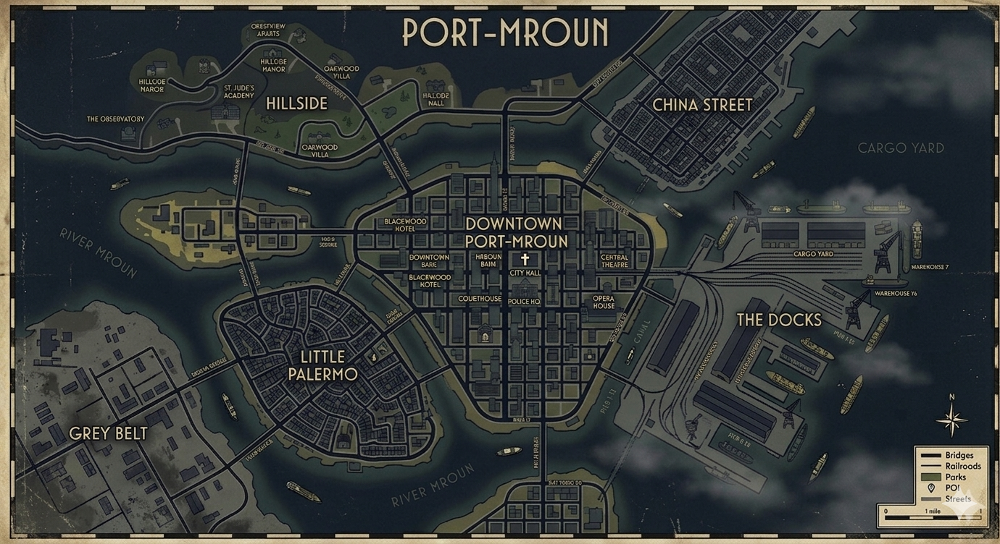

Текстовая ролевая игра
«Город, где дождь смывает всё, кроме грехов»
1 9 4 7
История города
Порт-Мроун — портовый город на восточном побережье США. Война закончилась два года назад, солдаты вернулись домой — но мир так и не наступил. Улицы пропитаны дымом сигарет, джазом из баров и запахом дождя на мостовой.
Порт кормит весь город: легальные грузы, контрабанда, деньги. Итальянская семья Моретти держит половину судей и весь Литтл-Палермо. Китайская Триада Красного Лотоса действует тихо — но её щупальца тянутся повсюду. Полиция делает вид, что не замечает. Или получает за это.
Репортёры газеты «Порт-Мроун Геральд» знают слишком много. Независимые преступники не подчиняются никому — именно поэтому они опасны. А честные детективы ведут войну сразу на два фронта: против преступников и против собственного начальства.
Городская карта

География
Силы города
Механика
Правила игры опубликованы и обязательны к прочтению перед вступлением.